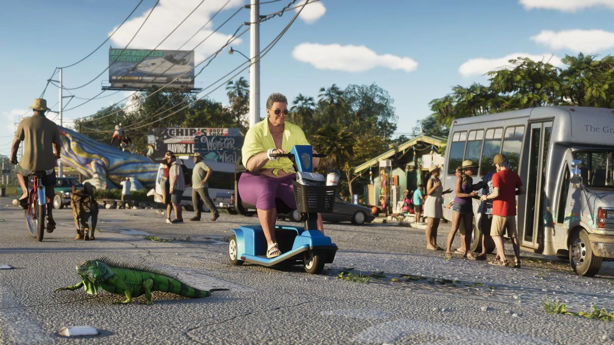

Необязательные задания главы 1 GTA 6: что сделать до точки невозврата
Опубликовано:

- В главе 1 есть 10 необязательных заданий — они не нужны для сюжета, но дают отношения с Лусией, деньги и бонусы банка.
- Пять заданий перед возвращением Лусии — лучший старт отношений: уровень 3 из 4.
- Перед миссией Recalibration — точка невозврата: дом на Ки-Ленто и все наличные пропадут. Сохранитесь и переведите деньги на сбережения.
Подготовка к возвращению Лусии
Открываются после миссии Feng Shui и делаются до звонка из тюрьмы. Все пять стоит сделать: от них зависит, с какого уровня начнутся отношения в Coming Home.
| Задание | Что сделать | Детали |
|---|---|---|
| Pick up Groceries | купить продукты и отнести домой | в магазине Ки-Ленто возьмите любые три товара с розовыми метками (оплата сразу, без кассы), положите в багажник, дома отнесите внутрь |
| Buy Flowers | купить цветы | цветочный ларёк на юге Ки-Ленто: большой букет — $10, розы — $25; на отношения выбор не влияет, цветы доставят домой сами |
| Buy Lucia a Necklace | купить цепочку | ювелирный The Siren’s Chest на юге Ки-Ленто, рядом с парикмахерской; в гайде PowerPyx цена указана как $425 и $475 в разных разделах. Во второй главе Лусия может оставить цепочку в залог |
| Get The Chop | постричься | салон Barnacle Beauties рядом с ювелирным: любая стрижка, можно цвет волос и бороду. Старую причёску потом придётся покупать заново |
| Get Lucia’s Clothes | забрать одежду для Лусии | ответьте на звонок «Неизвестный» от Энди, найдите её в баре Manatee’s Rest на севере Ки-Ленто, заберите сумку с одеждой и держите в багажнике до поездки в тюрьму |
Заодно почините дом Джейсона: стену в спальне, лестницу, крышу и перила на балконе. Лусия оценит это в финальной сцене Coming Home.
Деньги и банк
Deposit Cash Into BuckMe. После Buck Me на карте нет метки — задание запускается из списка (значок книги на карте) у любого банкомата. В приложении BuckMe выберите «ATM Finder» — ближайший банкомат рядом с домом Джейсона — и положите наличные на сбережения.
Save for the Future. Цепочка на всю игру: копите на Family Savings, и за каждую цель банк повышает лимит текущего счёта и даёт скидки. Следующая цель открывается только по ходу сюжета.
| Уровень | Цель накоплений | Лимит текущего счёта | Бонус |
|---|---|---|---|
| Buckin’ Broke | $5 000 | $15 000 | — |
| BuckeDry | $10 000 | $100 000 | −20% на поездки RydeMe |
| BuckMe Gold | $100 000 | $500 000 | −20% на покупку гаражей |
| BuckMe Premium (Black) | $500 000 | $2 000 000 | −10% на ливреи |
| Rich as Buck | $1 000 000 | $2 000 000 | — |
| Последний уровень | $2 000 000 | не раскрыт | не раскрыт |
Уровень BuckMe Premium выдают автоматически в начале главы 4, сколько бы у вас ни было на сбережениях. С Family Savings деньги нельзя снять, но и потерять их нельзя — поэтому всё, что не нужно прямо сейчас, лучше держать там.
Потерянный груз Донни
Find the Lost Drugs — после Down to Earth позвонят насчёт груза, разлетевшегося по болотам. На карте четыре зоны поиска, в каждой 1–3 пакета: они пищат и мигают жёлтым. Отдельной награды нет, но груз можно продать скупщику.
| Зона | Пакетов | Где искать |
|---|---|---|
| Recreation Area (самая южная) | 2 | один застрял на дереве на пляже с тремя врагами — собьёте выстрелом; второй — в воде в конце мостков |
| Сгоревшие дома | 3 | на южном берегу перед вторым сгоревшим домом; в одиночном сгоревшем доме на северном берегу; в синем детском бассейне у горки |
| Pelican Valley | 2 | там, где лежали аллигаторы, — отгоните их выстрелами |
| Thorpe Adventures (северная) | — | пакеты уже растащили: внутри сарая два врага и полкирпича кокаина — его достаточно |
Donnie’s Lost Drugs — после Swamped. Возьмите лодку на северном берегу Ки-Ленто (вплавь слишком долго), найдите в розовой зоне в Атлантике затонувший катер (юго-восточная часть зоны), откройте отсек на корме и заберите сумку. На складе Брайана за неё дают $1 200.
Clock Out
На следующий день после Day Release Лусия может позвонить: смена закончилась раньше. Если согласиться, заберите её из общественного центра Ки-Ленто до 16:00 — обязательно на машине (пешком она обидится) — и отвезите домой. Плюс к отношениям. Задание появляется не всегда: по наблюдению PowerPyx, может требоваться уровень отношений «Crazy in Love» (3 из 4).
Перед точкой невозврата
- Сделайте ручное сохранение и не перезаписывайте его.
- Переведите наличные на Family Savings — минимум $5 000. Всё, что будет в кармане, пропадёт.
- Закончите дела на Ки-Ленто: сокровища Кентона, рыбалка с Кэлом и точки Kingfishers на время пропадут.
- Дом Джейсона на Ки-Ленто после главы 1 будет потерян навсегда.
Точка невозврата — миссия Recalibration.
Частые вопросы
Какие задания сделать до освобождения Лусии?
Пять: продукты, цветы, цепочка, стрижка и одежда для Лусии от Энди. Все вместе дают старт отношений с уровня 3 из 4.
Стоит ли копить деньги в главе 1?
Копить наличные бессмысленно: в конце главы они пропадут. Переводите деньги на Family Savings — там они сохранятся.
Сколько платят за Donnie’s Lost Drugs?
$1 200 — если сдать груз Брайану на его склад.
Источники: PowerPyx — «Pick up Groceries», «Buy Flowers», «Buy Lucia a Necklace», «Get The Chop», «Get Lucia’s Clothes», «Coming Home», «Deposit Cash Into BuckMe», «Save for the Future», «Find the Lost Drugs», «Donnie’s Lost Drugs», «Clock Out», «Recalibration», «GTA 6 Money Guide», 18–19.11.2026.